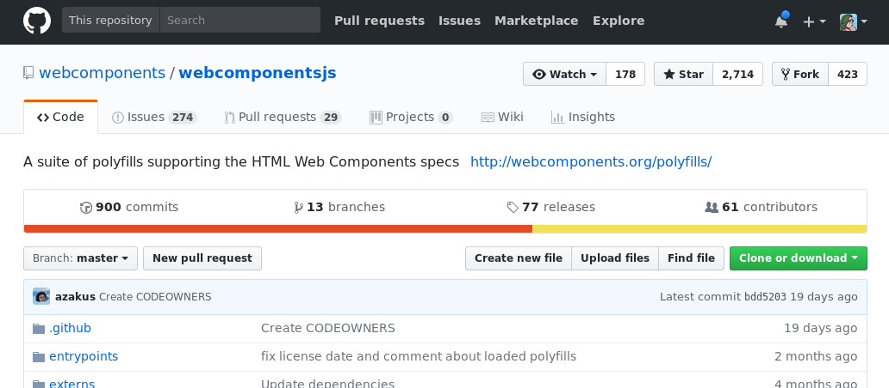

<web-components>
@samsunginternet
@lady_ada_king

My goals today are 3 fold:
- Help you to understand web components
- Get you to start using Web Components
- Introduce a new way of thinking about bulding Web Apps
lolol
What are Web Components?
Custom Elements

Shadow DOM
Scoped css
JS Callbacks

Web Components are a way of encapsulating logic and style into components you can author with HTML.
You can tell them apart from normal HTML elements because they have a dash in the name.
They provide 3 useful powers for seperating your concerns.
- Custom Elements
- Shadow DOM for encapsulating HTML
- Scoped CSS for encapsulating CSS
- Callbacks for element life cycle to control JS
Advantages of Web Component

<html>
Emmet Demo
Webcomponents
❤
CSS Grid
- Easily reusable bites of software
- Hide implementation complexity, uniform interface.
- Integrate into any website
- Frontend Framework or backend it's agnostic. Just HTML.
- Reuse HTML authoring tools
- CSS Grid, no DIV soup
- When your HTML makes sense you can do cool stuff with it.
- Emmet syntax. (grid-slides>h1)+(grid-notes>ul>li*3)
Building components
Live Demo of:
Hello World
Hello World
Hello World
Note: Style scoping not possible with polyfill.
Live Demo of:
Hello World
Hello World
Hello World
- Make a class
- Register component
- Add some Shadow DOM
- Why mode 'open'? closed prevents it from being accessed from external javascript no real need for this. No additional encapsulation.
- Use template elements
- Show html`` trick
- Add some scoped styles
- React to attribute changes
Using the Polyfill
https://github.com/webcomponents/webcomponentsjs
- Shadow DOM
- Custom Elements
- Scoped CSS (Needs some user work)
Handling the CSS Scoping
Completed example component.
by Monica Dinculescu (@notwaldorf)
https://goo.gl/m5gdrq
- Find the script from the site
- I use the custom elements and shady dom polyfill
- Shady DOM simulates encapsulation by writing element specific CSS
- Shady DOM stops CSS escapting but does not stop external powers affecting it.
Case study, VJ-OTG
https://samsunginter.net/vj-otg/

Case study, VJ-OTG
"VJ-OTG, is a Web App to use WebAudio, WebMidi & WebGL to produce visualisations for night clubs."
The Challenge:
- Connect together very different pieces of technology
- Be highly configurable in how they interact
- Be simple to configure.
- App to make visualisations for parties.
- HTML provides a single point where we can describe the relationships between the technology.
- By providing a common language these disparate technology can communicate without needing to know how they work.
- Components for WebGL Visuals
- Components for interfacing with Web Midi
- Coming up with these elements was messy, they did not leap fully grown from my forehead.
- First we built demos
- Then we encapsulated chunks of functionality in components
- We then interacted with them with further logic.
- Which we then collected into compoents
- If components do too much or grow too large the refactor them into smaller components.
- In the case of the visual components, I refactored it twice.
- Too much configuration on the elements so I made each one seperate
- All of the children only configure the parent, they do very little themselves.
- Notice both sets of components have a wrapper component, this is the main element it maintains any group state sets up any shared resources.
- The midi-controller sets up the WebMidi listener and fires events on the respective midi-pad or midi-cc
- The individual components provide the dummy elements and let the parent know if they are clicked.
- The viusaliser has a canvas and renderer, the elements inside are used to write the shader which is run to generate the graphics.
- The children nodes don't actually have any DOM but the element was too complex to configure as a single element
- Each element represents small snippets of GLSL and dynamically update the parent if they get changed.
- Communicate with each other via messaging
- Helper class HTMLElementPlus
Building a whole app using just components
HTML holds the initial app state.
Static or rendered on the server.


- Traditional View point, HTML as render target.
- HTML is currently just a render target, probably has some minimal bootstrap script maybe some serve side rendered HTML. Which gets rehydrated with JavaScript. Web components allow us to move large chunks of our JS and Style into components. The HTML then becomes the configuration layer. Seperation of concerns graph changes. From JS/CSS/HTML to Component/Component/Component each with their own JS/CSS & HTML. If your CMS has the capability of authoring HTML it becomes a lot more powerful.
- Use the HTML to set the initial state of the app.
- Elements signal changes by firing events.
- Elements listen for changes using addEventListener
- Elements are updated with el.setAttribute
- Elements can expose values to the attributes on the element e.g. el.foo
- Elements can be made to watch other elements. E.g.
- Elements not designed to listen to changes in each other can be patched with JavaScript.
Migrating an Existing App
Lego Street Repairs by Jan Vormann
Article: https://goo.gl/N8J58i
Slide Deck: https://ada.is/grid-slides/components/
- What are web components
- Encapsulate logic, tied to DOM life cycle
- What advantages do they provide
- Emmet Code `ul>li*3`, Logic Encapsulation, Style Encapsulation, When used one off, when used together
- Using them today
- Polyfill, Shady Dom
- A case study, VJ-OTG
- What did we learn from this?
- How I use Web Components
- HTMLElementPlus
- Building components that work together
- Using HTML as the configuration layer
- Migrating to using web components
- Web Components work within existing frame works because they are just HTML.
- A final case study, look ma no DOM
- Using Web Components to wrap three.js